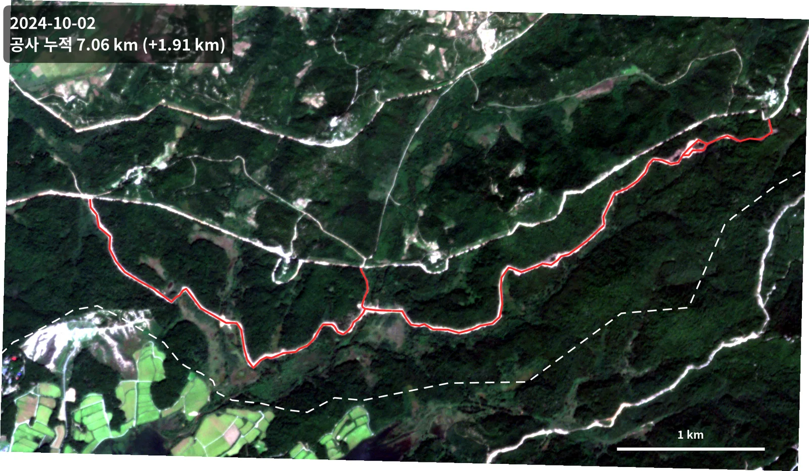
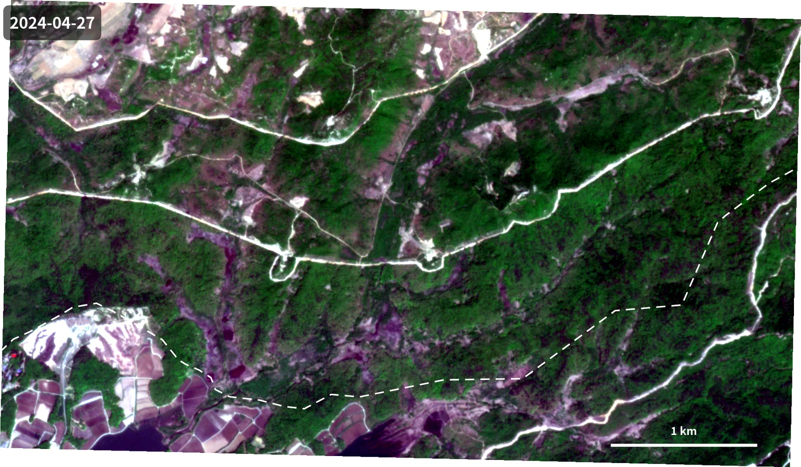
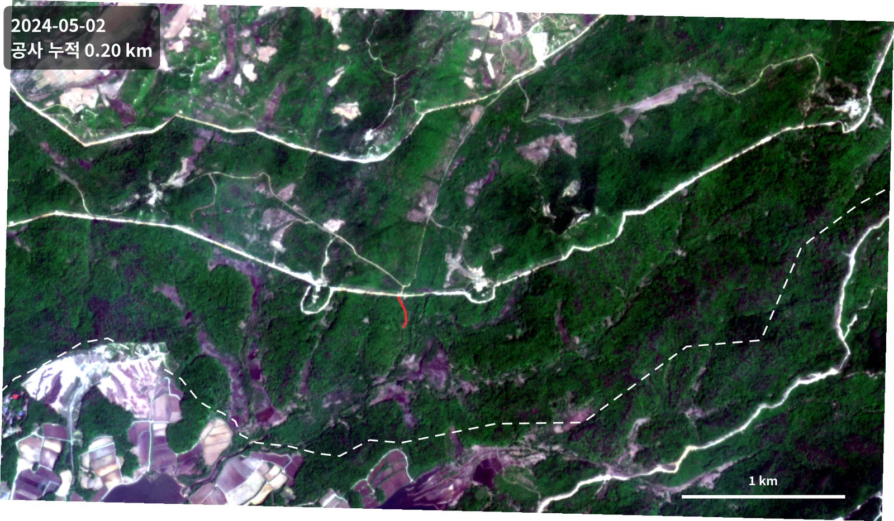
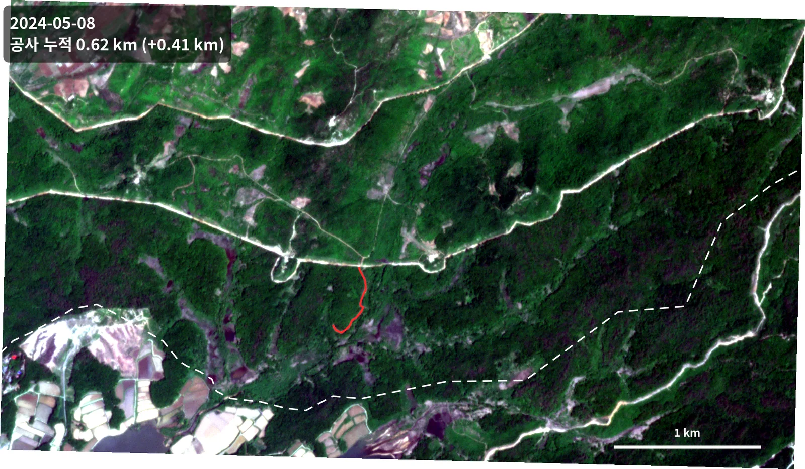
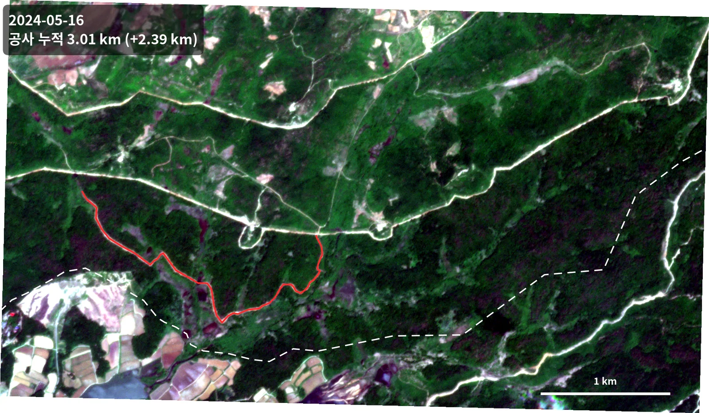
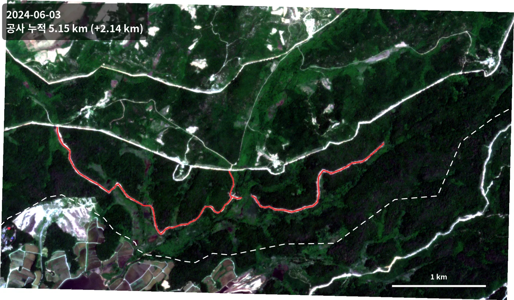
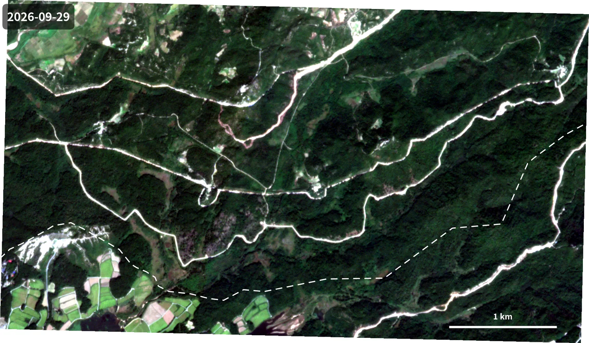
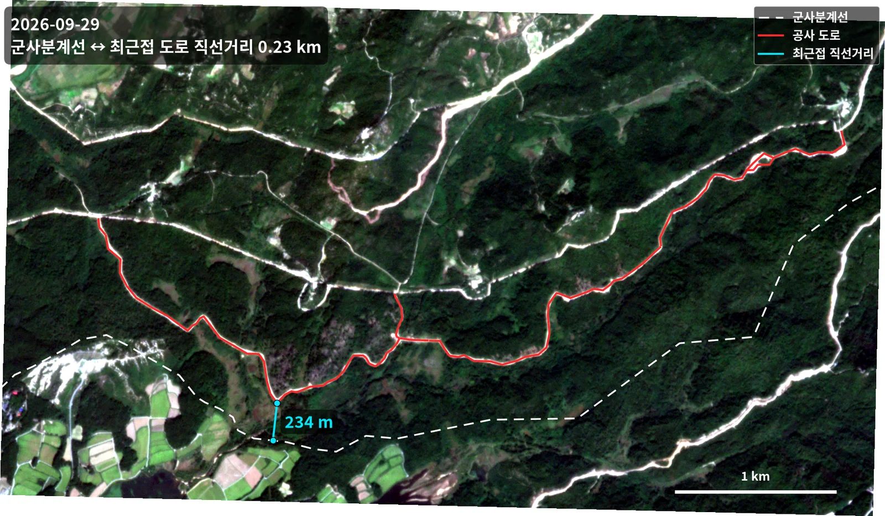

접경지역 도로 공사 진행 변화탐지Border-Area Road Construction Change Detection
공개 상용 위성영상 시계열로 접경지역 도로 공사의 진행을 시기별로 추적함. 5개월 만에 누적 연장 0.2 km에서 7.06 km로 늘었고, 최근접 지점은 군사분계선에서 약 230 m다.Tracked road construction near the inter-Korean border through a time series of commercial satellite imagery. Cumulative length grew from 0.2 km to 7.06 km in five months; the nearest point sits about 230 m from the Military Demarcation Line.
배경 · 목표Background
- 접경지역의 지형 변화는 현장 접근이 불가능해 위성영상이 사실상 유일한 관측 수단임.
- 공개된 상용 위성영상만으로 공사 진행을 시기별로 정량화할 수 있는지 확인하고자 함.
- 구름이 적고 재방문 주기가 짧은 PlanetScope를 선택했다 — 일 단위 관측이 가능해 공사처럼 빠르게 변하는 대상에 적합함.
- Terrain change in the border area cannot be surveyed on the ground, so satellite imagery is effectively the only observation route.
- The question was whether construction progress can be quantified by date using commercial imagery alone.
- PlanetScope was chosen for its near-daily revisit — short enough to follow something that changes as fast as roadworks.
방법Method
- PlanetScope PSScene (analytic 8-band, 표면반사도 SR, UDM2 품질 마스크) 7시기 수집 — 2024.04.27 ~ 2026.09.29.
- 구름·그림자 화소를 UDM2 마스크로 제거하고, 시기 간 색감이 흔들리지 않도록 동일한 스트레치를 적용함.
- 각 시기 영상에서 새로 드러난 절토·성토 구간을 선형(LineString)으로 디지타이징했다 — 총 5개 시기, 피처 2개에서 8개로 증가.
- OpenStreetMap 군사분계선(MDL) 선형을 참조 레이어로 사용함.
- EPSG:5179(Korea 2000 Unified CS)로 투영해 연장과 거리를 미터 단위로 산출했다 — 경위도상 거리 계산의 왜곡을 피하기 위함.
- 시기별 누적 연장과 증가분, MDL까지의 최단거리를 계산해 지도에 주기함.
- Collected seven PlanetScope PSScene acquisitions (8-band analytic, surface reflectance, UDM2 quality mask) from 2024-04-27 to 2026-09-29.
- Removed cloud and shadow pixels using the UDM2 mask and applied an identical stretch across dates so colour would not drift between scenes.
- Digitised newly exposed cut-and-fill segments as LineStrings for each date — five dates, growing from 2 to 8 features.
- Used the OpenStreetMap Military Demarcation Line as a reference layer.
- Reprojected to EPSG:5179 (Korea 2000 Unified CS) so lengths and distances compute in metres, avoiding the distortion of measuring in degrees.
- Computed cumulative length, per-period increment, and minimum distance to the MDL, and annotated them on each map.
결과Results
- 2024.05.02 — 누적 0.20 km (최초 확인)
- 2024.05.08 — 누적 0.62 km (+0.41 km)
- 2024.05.16 — 누적 3.01 km (+2.39 km, 가장 빠른 구간)
- 2024.06.03 — 누적 5.15 km (+2.14 km)
- 2024.10.02 — 누적 7.06 km (+1.91 km)
- 공사 구간에서 군사분계선까지의 최단거리 약 233 m (EPSG:5179 기준 실측)
- 2026.09.29 최신 영상에서도 노선 형상이 유지됨을 확인
- 2024-05-02 — 0.20 km cumulative (first detection)
- 2024-05-08 — 0.62 km (+0.41 km)
- 2024-05-16 — 3.01 km (+2.39 km, the fastest interval)
- 2024-06-03 — 5.15 km (+2.14 km)
- 2024-10-02 — 7.06 km (+1.91 km)
- Minimum distance from the works to the Military Demarcation Line: about 233 m, measured in EPSG:5179
- The alignment remains visible in the most recent imagery (2026-09-29)








배운 점 · 한계What I learned · Limitations
- 일 단위 재방문이 가능한 소형위성 군집이 '언제 시작해서 얼마나 빨리 진행되는가'라는 질문에 특히 강하다는 걸 확인함. 중해상도 위성의 재방문 주기로는 2024년 5월의 급격한 증가 구간을 놓쳤을 것임.
- 자동 변화탐지보다 수동 디지타이징이 정확함. 산지 절토면은 나지(裸地)와 분광 특성이 비슷해 자동 분류가 혼동함. 대상이 선형이고 시기가 7개뿐이라 사람이 그리는 편이 빠르고 믿을 만함.
- 미터 단위 결과를 낼 때는 투영 선택이 결론을 바꿈. 경위도(EPSG:4326)에서 그대로 길이를 재면 위도에 따라 오차가 생겨, 국내 표준 투영으로 변환한 뒤 계산함.
- 한계: 광학 영상이라 구름 낀 시기는 공백임. 2024.06 이후 2024.10까지 네 달의 공백이 있어 그 사이 진행 속도는 알 수 없음. Sentinel-1 SAR을 보조로 쓰면 메울 수 있었을 것임.
- Confirmed that a daily-revisit smallsat constellation is especially strong at answering 'when did it start and how fast is it going'. A mid-resolution satellite's revisit would have missed the sharp May 2024 jump entirely.
- Manual digitising beat automatic change detection here. Fresh cut slopes are spectrally close to bare ground, which confuses a classifier. With a linear target and only seven dates, drawing by hand was both faster and more trustworthy.
- When the output is in metres, the projection choice changes the answer. Measuring length directly in EPSG:4326 introduces latitude-dependent error, so everything was reprojected to the national grid first.
- Limitation: optical imagery means cloudy dates are simply gaps. There is a four-month hole between June and October 2024, so the rate in that window is unknown. Sentinel-1 SAR as a fallback would have filled it.
관련 코드Code
eo/planetscope/change-detection/
디지타이징은 QGIS 수작업이고, 저장소에는 연장·거리를 계량하는 스크립트만 있음.Digitising was manual in QGIS; the repository holds only the script that measures length and distance.
저장소는 센서 → 위성 → 기법 순으로 정리돼 있고, 각 폴더에 입력·출력 표가 있음.The repository is organised by sensor, satellite and technique; each folder documents its inputs and outputs.
코드 저장소는 비공개입니다. 열람이 필요하시면 아래 연락처로 알려주시면 접근 권한을 드립니다.The code repository is private. Email me and I will grant you access.
산출물Deliverables
- 시기별 공사현황 shapefile 5종
- 군사분계선 참조 레이어
- 시기별 주기 지도 13장
- QGIS 프로젝트
- Five dated construction shapefiles
- MDL reference layer
- Thirteen annotated date maps
- QGIS project
원본 보고서와 발표자료는 사내 자료로 공개하지 않음. 분석 코드는 GitHub에 정리되어 있음.Source reports and decks are internal and not published here. Analysis code is organised on GitHub.